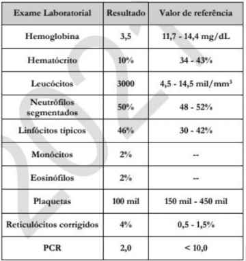
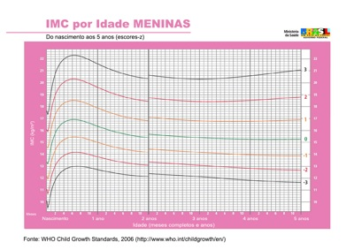
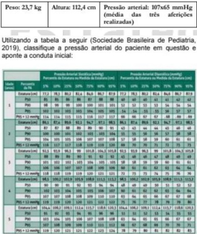
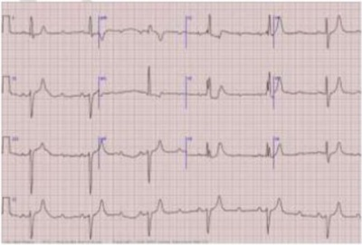
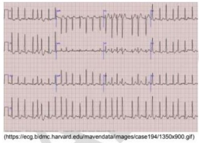
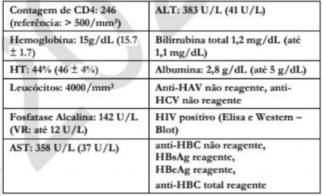

Questão 1 · Ref luxo Gastroesof ágico RGE · Abordagem do RGE Fisiológico · Pediatria · 4000146058Lactente, 4 meses de vida, trazido em consulta pela mãe, preocupada, pois há 1 mês o lho tem apresentando regurgitações frequentes após as mamadas, (cerca de 3- 4/dia), de aspecto leitoso, sem sinais de náusea ou desconforto. À anamnese e ao exame físico: criança nasceu a termo, está em aleitamento materno exclusivo, não tem outras comorbidades, apresenta desenvolvimento neuropsicomotor adequado. Peso e estatura estão entre os percentis 15 e 50, desde o nascimento. Quanto ao caso em questão, a conduta deve ser:
A Acalmar a mãe, orientar medidas posturais e prescrever inibidor de bomba de prótons.
B Orientar medidas posturais e tranquilizar a mãe sobre o curso benigno da condição.
C Orientar medidas posturais e prescrever antagonista dos receptores H₂ da histamina.
D Orientar medidas posturais e solicitar pHmetria esofágica de 24h para diagnóstico definitivo.
Questão 2 · Sepse neonatal · Pediatria · Neonatologia · 4000146057Admitida no pronto-socorro obstétrico gestante em trabalho de parto avançado, com idade gestacional de 33 semanas. Há 6 dias com perda de líquido claro, em pequena quantidade, o qual julgava ser urina, quando no dia anterior iniciou febre alta e dor em baixo ventre. Tentou fazer uso de analgésico e antitérmico em casa, sem melhora. Ao exame clínico: dor à mobilização do colo e hipertonia uterina. Iniciada antibioticoterapia parenteral para a mãe, com evolução do trabalho de parto e nascimento de recém-nascido após 1h da admissão. Apgar 5/7, com necessidade de manobras de reanimação, sendo conduzido à UTI Neonatal. Considerando o risco de sepse neonatal a partir do caso, assinale a alternativa que apresenta os agentes mais frequentes dessa condição:
A Streptococcus agalactiae e anaeróbios
B Streptococcus pyogenes e anaeróbios
C Escherichia coli e Staphylococcus aureus
D Streptococcus agalactiae e Escherichia coli
Questão 3 · Pediatria · Exantema Súbito · 4000146056Lactente de um ano, nascido a termo, iniciou há três dias febre alta, persistente, sem sintomas associados, sem toxemia. Hoje não apresentou mais nenhum pico febril, porém pais observaram o aparecimento de “lesões na pele”, inicialmente no tronco e depois se espalhando para membros e cabeça. Negam antecedentes relevantes. Calendário vacinal atualizado. Trazem criança à unidade de saúde para avaliação médica. Ao exame clínico: lactente ativo, afebril, normocorado, hidratado, sinais vitais normais. Ausculta cardiopulmonar e exame abdominal sem alterações. Exantema maculopapular difuso, poupando regiões palmares e plantares. Indique o diagnóstico e o agente etiológico compatíveis com o quadro:
A Exantema súbito; herpes-vírus humano 6.
B Exantema súbito; parvovírus B19.
C Eritema infeccioso; parvovírus B19.
D Eritema infeccioso; herpes-vírus humano 6.
Questão 4 · Pediatria · PneumoniasBroncopneumonias BCP na Inf ância · 4000146055Menina, 3 anos de idade, no pronto atendimento com tosse há 12 dias e febre há 4 dias. Mãe refere que a criança há 3 dias vem apresentando desconforto respiratório progressivo. No início, a mãe procurou o pronto atendimento devido à tosse, sendo orientada lavagem nasal e uso de sintomáticos. Paciente previamente hígida, com carteira vacinal em dia, sem internações prévias. Ao exame clínico: bom estado geral, corada, hidratada, acianótica, responsiva a comandos orais; temperatura axilar = 37ºC, frequência cardíaca = 117 batimentos/minuto; frequência respiratória = 35 incursões/minuto, saturação periférica de O₂ = 97%, em ar ambiente; tempo de enchimento capilar = 2 segundos; sem linfonodomegalias. Ausculta cardíaca: bulhas rítmicas, normofonéticas, sem sopros, pulsos centrais e periféricos cheios, rítmicos e simétricos. Ausculta pulmonar: murmúrios vesiculares presentes, bilateralmente, com estertores finos e broncofonia aumentada em base direita, sem tiragens. Abdome sem alterações, sem lesões de pele. De acordo com a principal hipótese diagnóstica (HD), sobre a indicação de radiografia de tórax, neste caso é correto afirmar que:
A Não deve ser feita em quadros graves com hipoxemia.
B Não é necessária para o diagnóstico, dado o bom estado geral.
C É indicada apenas nos casos sem comprometimento sistêmico.
D Há evidências que altera o resultado clínico.
Questão 5 · Pediatria · PneumoniasBroncopneumonias BCP na Inf ância · 4000146054Menina, 3 anos de idade, no pronto atendimento com tosse há 12 dias e febre há 4 dias. Mãe refere que a criança há 3 dias vem apresentando desconforto respiratório progressivo. No início, a mãe procurou o pronto atendimento devido à tosse, sendo orientada lavagem nasal e uso de sintomáticos. Paciente previamente hígida, com carteira vacinal em dia, sem internações prévias. Ao exame clínico: bom estado geral, corada, hidratada, acianótica, responsiva a comandos orais; temperatura axilar = 37ºC, frequência cardíaca = 117 batimentos/minuto; frequência respiratória = 35 incursões/minuto, saturação periférica de O₂ = 97%, em ar ambiente; tempo de enchimento capilar = 2 segundos; sem linfonodomegalias. Ausculta cardíaca: bulhas rítmicas, normofonéticas, sem sopros, pulsos centrais e periféricos cheios, rítmicos e simétricos. Ausculta pulmonar: murmúrios vesiculares presentes, bilateralmente, com estertores finos e broncofonia aumentada em base direita, sem tiragens. Abdome sem alterações, sem lesões de pele. Com base no caso, aponte a principal hipótese e os dados propedêuticos que sustentam tal hipótese, de acordo com os critérios nacionais e internacionais:
A Pneumonia; febre, tosse, estertores finos.
B Sinusite aguda; febre, estabilidade hemodinâmica.
C Tuberculose; tosse, febre, broncofonia aumentada.
D Fibrose cística; estado geral preservado, febre, tosse.
Questão 6 · Pediatria · Doença de Kawasaki · 4000146053Menino, 4 anos de idade, previamente hígido, admitido em Unidade de Emergência há 6 dias, com febre alta e persistente. Ao exame, notava-se hiperemia de orofaringe e de conjuntiva, adenomegalia cervical unilateral não dolorosa, rash cutâneo micropapular, difuso, e eritema com edema em extremidades. Nota-se vermelhidão ao redor da cicatriz da vacina BCG 8. Qual é a principal hipótese diagnóstica para o caso?
A Escarlatina
B Eritema Súbito
C Síndrome de Kawasaki
D Sarampo
Questão 7 · Crise de sequestro esplênico · 4000146052Menino, 2 anos de idade, com diagnóstico de anemia falciforme, no prontosocorro trazido por seu pai, com queixa há 1 dia de palidez, aumento do volume abdominal e diminuição de diurese. Ao exame clínico: regular estado geral, descorado 3+/4+, mucosas desidratadas, anictérico, afebril, sonolento, sem linfonodomegalias. Ausculta cardíaca com bulhas taquicárdicas, com sopro sistólico de 3+/6+. Tempo de enchimento capilar = 4 segundos. Ausculta respiratória sem alterações, com taquipneia, saturação de O₂ = 93%, em ar ambiente. Abdome: baço palpável a 6cm do rebordo costal esquerdo (pai refere que normalmente baço ca há 2cm do rebordo costal). Sem edemas e sem lesão de pele. Solicitados exames reproduzidos a seguir: Qual é o diagnóstico que explica os dados clínicos observados nesta criança?

A Síndrome hemofagocítica
B Aplasia medular
C Crise vaso oclusiva
D Sequestro esplênico
Revisar: possível letra faltando em enunciado
Questão 8 · Quadro clínico da anemia f alcif orme · Introdução à anemia f alcif orme · 4000146051Renata está na primeira consulta com pediatra da UBS. Evoluindo bem, com ganho de peso de 20 g/dia, boa aceitação de leite materno, sem alterações no exame clínico, sem queixas gastrointestinais. A mãe traz o Teste do Pezinho, cujo resultado na triagem de hemoglobinopatias é: presença de hemoglobinas F e S. Qual é o diagnóstico identi cado no exame ?
A Beta Talassemia
B Traço falciforme
C Doença falciforme
D Deficiência de G6PD
Revisar: possível letra faltando em enunciado
Questão 9 · Pediatria · Hematologia Pediátrica · 4000146050O screening neonatal, conhecido como “Teste do Pezinho”, foi introduzido no Brasil na década de 70 para identi car doenças que já se manifestam em recémnascidos. Desde 1992 o teste se tornou obrigatório, e em 2001 o Ministério da Saúde criou o Programa Nacional de Triagem Neonatal. Qual das hemoglobinopatias abaixo NÃO pode ser descartada na triagem do teste do pezinho com resultado normal?
A Alfa talassemia major
B Beta talassemia minor
C Anemia falciforme
D Traço falciforme
Questão 10 · Pediatria · Classif icação e Tratamento da Crise · 4000146049Menino, 8 anos de idade, com diagnóstico prévio de asma controlada e sensibilização a gatos, em uso domiciliar de corticoide inalatório, em dose baixa. Admitido em Unidade de Emergência com tosse e cansaço, iniciados há cerca de 2 horas, depois de ter ido à casa de uma tia que possui dois gatos de estimação. Ao exame: BEG, orientado, fala satisfatória, com leve tiragem intercostal e subdiafragmática. Sinais vitais: frequência cardíaca: 98 batimentos/minuto; frequência respiratória: 28 incursões/minuto; saturação de O₂: 95%, em ar ambiente. Sibilos expiratórios, bilateralmente. A conduta adequada para este menino deve ser:
A Oxigênio suplementar de baixo fluxo. Iniciar o uso do broncodilatador por via inalatória, corticosteroide endovenoso. Solicitar radiografia de tórax e gasometria arterial.
B Oxigenioterapia suplementar, broncodilatador por via inalatória, corticosteroides por via oral de 12/12 horas. Colher gasometria arterial antes de iniciar terapêutica.
C Sala de emergência, monitorização cardíaca, iniciar oxigênio suplementar. Gasometria arterial. Broncodilatador por via inalatória, corticosteroide por via endovenosa.
D Broncodilatador por via inalatória e corticosteroide por via oral. Não estão indicados exames complementares para o caso neste momento, pela estabilidade clínica.
Questão 11 · Pediatria · Classif icação e Tratamento da Crise · 4000146048Menino, 8 anos de idade, com diagnóstico prévio de asma controlada e sensibilização a gatos, em uso domiciliar de corticoide inalatório, em dose baixa. Admitido em Unidade de Emergência com tosse e cansaço, iniciados há cerca de 2 horas, depois de ter ido à casa de uma tia que possui dois gatos de estimação. Ao exame: BEG, orientado, fala satisfatória, com leve tiragem intercostal e subdiafragmática. Sinais vitais: frequência cardíaca: 98 batimentos/minuto; frequência respiratória: 28 incursões/minuto; saturação de O₂: 95%, em ar ambiente. Sibilos expiratórios, bilateralmente. Classi que a crise de asma, considerando os dados clínicos:
A Leve
B Grave
C Moderada
D Intensa
Questão 12 · Obesidade · Pediatria · Diagnóstico Nutricional · 4000146047Mãe traz lha de 10 meses de idade à consulta e diz que está orgulhosa, pois ela come bem e todos a acham “fo nha”. Criança nascida a termo, em aleitamento materno exclusivo até os 6 meses, atualmente mantém aleitamento e alimentação complementar. Mãe nega oferta de alimentos adoçados ou industrializados e a rma que a criança “nunca está satisfeita”. Nega comorbidades conhecidas. Nega casos de obesidade ou doenças endocrinológicas na família. Ao exame: lactente sem dismor smos faciais, ativa, normocorada, hidratada, eupneica. Ausculta cardiopulmonar e exame abdominal sem alterações. Estatura: 70cm; peso: 12kg; IMC = 23 kg/m². Analisando o caso e o gráfico abaixo, responda as questões a seguir: Sobre a avaliação clínica de crianças com algum grau de sobrepeso/obesidade, assinale a alternativa correta:

A Na obesidade exógena, a idade óssea geralmente é atrasada, o que contribui para que esses pacientes geralmente tenham uma estatura mais elevada na idade adulta.
B É importante investigar sobre os hábitos alimentares da criança. Em casos de inadequação nesse aspecto, pode- se dar o diagnóstico de obesidade exógena.
C Obesidade iniciada no primeiro ano de vida é um sinal de alerta para a necessidade de investigação adicional para a etiologia da obesidade.
D A Síndrome de Prader-Willi é uma síndrome genética associada à obesidade caracterizada por hiperfagia, obesidade grave, dismorfismo facial, pés e mãos grandes e estatura elevada
Questão 13 · Pediatria · Diagnóstico Nutricional · 4000146046Mãe traz lha de 10 meses de idade à consulta e diz que está orgulhosa, pois ela come bem e todos a acham “fo nha”. Criança nascida a termo, em aleitamento materno exclusivo até os 6 meses, atualmente mantém aleitamento e alimentação complementar. Mãe nega oferta de alimentos adoçados ou industrializados e a rma que a criança “nunca está satisfeita”. Nega comorbidades conhecidas. Nega casos de obesidade ou doenças endocrinológicas na família. Ao exame: lactente sem dismor smos faciais, ativa, normocorada, hidratada, eupneica. Ausculta cardiopulmonar e exame abdominal sem alterações. Estatura: 70cm; peso: 12kg; IMC = 23 kg/m². Analisando o caso e o gráfico abaixo, responda as questões a seguir: Conforme gráfico da OMS de índice de massa corporal versus idade, qual é a classificação nutricional desta paciente?

A Sobrepeso
B Obesidade grave
C Obesidade
D Eutrófica para a idadeS
Questão 14 · Hipertensão arterial HAS em crianças e adolescentes · Pediatria · 4000146045Menino, 5 anos de idade, em consulta de puericultura na Unidade Básica de Saúde em que você atua. A mãe e o menino não apresentam queixas. Você confere no prontuário que o paciente não apresenta antecedentes neonatais e patológicos importantes, porém encontra-se com diagnóstico nutricional de obesidade, e que não há relato de aferição da pressão arterial em consultas anteriores. Você verifica dados da antropometria e afere 3 vezes a pressão arterial do paciente. Restante do exame físico sem alterações. Utilizando a tabela a seguir (Sociedade Brasileira de Pediatria, 2019), classi que a pressão arterial do paciente em questão e aponte a conduta inicial:

A Hipertensão estágio 2. Encaminhamento para especialista avaliar melhor conduta diagnóstica e tratamento medicamentoso.
B Pressão arterial normal alta. Alimentação adequada, controle de peso, estímulo à redução de práticas sedentárias, realização de atividade física e reavaliações periódicas.
C Hipertensão estágio 1. Alimentação adequada e controle de peso, prática de atividade física, iniciar inibidor da enzima conversora da angiotensina (IECA.
D Pressão arterial elevada. Alimentação adequada, controle de peso, estímulo à redução de práticas sedentárias, realização de atividade física e reavaliações periódicas.
Questão 15 · Cirurgia Inf antil · Pediatria · Tratamento · 4000146044Lactente, menino, 4 meses de idade, com antecedente de prematuridade de 35 semanas, em consulta pediátrica devido ao aumento de volume na região do testículo direito, quando chora. Não apresenta febre, dor ou mudança de coloração no local. Ao exame clínico: bom estado geral, presença de abaulamento em região escrotal direita, mais evidente durante exão do tronco sobre o abdome. À palpação, notam-se testículos tópicos, com abaulamento redutível em bolsa escrotal direita e espessamento do cordão espermático. Restante do exame físico sem alterações. Qual é o diagnóstico e a conduta para o caso?
A Hidrocele não comunicante. Aguardar resolução espontânea.
B Hérnia inguinal. Indicar cirurgia.
C Hidrocele comunicante. Indicar cirurgia após 6 meses de idade.
D Cisto de cordão. Aguardar resolução espontânea.
Questão 16 · Tratamento · Dermatologia · Apresentação clínica · 4000146043Lactente, 1 mês de idade, em consulta na unidade básica de saúde devido a surgimento de lesões papulovesiculares eritematosas e pruriginosas no tórax e membros, acometendo também palmas e regiões interdigitais, há 5 dias. Há relato de grande irritabilidade da criança, principalmente noturna, e que a mãe e o lho mais velho, de 7 anos, tiveram lesões parecidas, que melhoraram após o uso de um comprimido do qual não se lembra o nome. Qual é a terapêutica indicada no caso?
A Permetrina em loção cremosa a 1%
B Enxofre precipitado a 10% em creme
C Permetrina em loção cremosa a 5%
D Ivermectina oralPermetrina em loção cremosa a 1%
Questão 17 · Linhas de DennieMorgan · Tratamento · Diagnóstico · 4000146042Paciente de 15 meses de idade, masculino em seguimento no ambulatório de pediatria geral com queixa de lesão de pele pruriginosa, prejudicando seu sono. Paciente com vacinação atualizada, com história prévia de 2 episódios de sibilância, sem necessidade de internação. Mãe com antecedente de asma e pai com rinite alérgica. Ao exame clínico, paciente com lesão eczematosa em face, em região malar, poupando maciço central, e em couro cabeludo e com dupla prega de Dennie- Morgan. Pele xerótica, com lesões eritematosas e pápulas eritematosas com algumas crostas pescoço, sem lesões em região de fralda. Sem outras alterações no exame clínico. Indique o diagnóstico e o tratamento:

A Dermatite atópica. Orientar banho, hidratação da pele e anti- histamínico para controle de prurido.
B Dermatite seborreica. Orientar limpeza da pele com óleos para remoção das crostas e anti-histamínico para controle de prurido.
C Estrófulo. Tratar com antibiótico oral por 7 dias e realizar descolonização tópica com mupirocina.
D Impetigo crostoso. Internar paciente para antibiótico endovenoso e descolonização tópica com mupirocina.
Questão 18 · Tuberculose · Diagnóstico · Pediatria · 4000146041Menino, 4 anos de idade, em consulta devido a tosse há 3 semanas. Há 10 dias com febre diária (38°C). Mãe refere que, há uma semana, levou a criança ao prontosocorro e, na ocasião, fez radiogra a de tórax, que mostrou in ltrado discreto em hemitórax direito. Recebeu amoxicilina durante sete dias, sem melhora. Mãe conta que o pai da criança tem apresentado tosse persistente há cerca de três meses. Ao exame clínico: paciente eutró co, hipocorado +1/4+, eupneico, hidratado, estertores nos, esparsos em hemitórax direito, sem outras alterações. Radiogra a atual semelhante à anterior. Prova tuberculínica (PPD) = 10mm. Criança submetida a indução de escarro, com duas coletas negativas. Sobre o caso, assinale a afirmativa correta:
A Tosse e febre insidiosas sugerem pneumonia por agentes atípicos, devendo-se iniciar tratamento com macrolídeo.
B Trata-se de tuberculose pulmonar muito provável. Iniciar tratamento por 6 meses com rifampicina, isoniazida e pirazinamida.
C O resultado do PPD é consequente ao contato com o pai da criança. A má resposta à amoxicilina demonstra resistência ao antibiótico prescrito.
D Trata-se de tuberculose pulmonar muito provável. Tratar por 2 meses com rifampicina, isoniazida e pirazinamida. Continuar com rifampicina e isoniazida por mais 4 meses
Revisar: possível letra faltando em enunciado
Questão 19 · Apneia Obstrutiva do Sono na Inf ância · Tratamento · 4000146040João, 10 anos de idade, em seguimento com pediatra geral, devido ao fato da escola ter encaminhado uma noti cação relatando que o menino sofre de sonolência nas aulas. Paciente previamente hígido, com vacinação em dia, sem uso de medicações prévias. Além da queixa escolar, a mãe refere ter notado que, há um mês, o menino espirra pela manhã todos os dias e coça os olhos com frequência. O paciente relata coceira na garganta. Ao exame clínico: palidez de mucosa nasal, respiração aquosa, com rinorreia aquosa bilateral e pele xerótica. Considerando o caso, qual o tratamento?
A Corticoide inalatório em baixas doses por 3 meses e reavaliação. Beta2agonista e corticoide oral nas crises.
B Lavagem nasal, amoxicilina associada a inibidor de betalactamase por 10 a 14 dias e reavaliação.
C Limpeza nasal com soro fisiológico, corticoide nasal por 2 a 4 semanas e reavaliação. Anti-histamínico H1 nas crises.
D CPAP nasal noturno contínuo e melatonina por 2 semanas até estabilização do sono.
Questão 20 · Convulsão f ebril · Pediatria · 4000146039Manuel, 3 anos de idade, há 2 dias com febre de 39°C (temperatura axilar) associada a rinorreia e tosse. Admitido em Pronto-Socorro com relato de crise tônicoclônica generalizada em vigência de febre com duração de 10 minutos há cerca de 2 horas. Evoluiu com sonolência breve após o episódio, mas agora está ativo, reativo e sem alterações neurológicas. Trata-se do primeiro episódio de crise convulsiva. O pai da criança apresentou quadros semelhantes na infância. Sobre o ocorrido, podemos afirmar que trata-se de:
A Crise de convulsão febril. Tranquilizar os pais e orientá-los quanto à possibilidade de recorrência em vigência de febre e sinais de alarme.
B Epilepsia. Prosseguir a investigação com eletroencefalograma e tomografia de crânio, internar paciente para observação por 12 horas.
C Crise convulsiva febril. Internar, coletar líquor e culturas (urina, sangue e líquor e iniciar antibioticoterapia empírica de amplo espectro.
D Epilepsia. Introduzir profilaxia contínua com fenobarbital. Internar para observação por 12 horas.
Questão 21 · Tipos de Estudos Epidemiológicos · 4000146038Em 1948, 5.209 indivíduos de ambos os sexos entre as idades de 30 e 62 anos, sem histórico de doenças cardiovasculares, foram recrutados para um estudo na cidade de Framingham, Massachusetts, Estados Unidos da América. Tais indivíduos foram acompanhados regularmente desde então, por meio de atendimentos e exames complementares regulares, com o objetivo de verificar a ocorrência de doenças cardiovasculares e definir os fatores de risco para se instalarem. O tipo descrito no parágrafo é caracterizado como um estudo de:
A Estudo transversal
B Caso-controle
C Coorte
D Ensaio clínico randomizado
Questão 22 · Bioética · Medicina Preventiva · Princípios f undamentais · 4000146037Nas tomadas de decisões para a alocação de recursos e tecnologias em saúde no estágio atual da pandemia de COVID- 19, a Sociedade Brasileira de Bioética argumentou que devem ser respeitados os princípios constitucionais da dignidade humana e da solidariedade social, os direitos humanos e os princípios bioéticos. Diante de tais requisitos, assinale a alternativa correta quanto à garantia de direito dos pacientes, que deve ser:
A Em todos os níveis de atendimento, desde a atenção primária, cuidados intermediários, até aos cuidados intensivos, exceto paliativos.
B Nos níveis de atendimento de cuidados intermediários e intensivos, para pacientes jovens e aqueles com menor número de comorbidades.
C Em todos os níveis de atendimento, desde a atenção primária, cuidados intermediários, até aos cuidados intensivos e paliativos.
D No nível de atendimento em atenção primária e de cuidados intensivos, independentemente da idade e das condições clínicas.
Questão 23 · Declaração de óbito DO Atestado de óbito · 4000146036Mulher, 82 anos de idade, sofreu fratura no quadril ao cair acidentalmente em casa. Foi operada, permanecendo internada. No 7° dia de internação (DI) identi cou-se acidente vascular encefálico isquêmico, de evolução conturbada, vindo a falecer no 10° DI. Assinale quem elaborará a declaração de óbito da paciente:
A Médico legista do Instituto Médico Legal.
B Patologista do Serviço de verificação de óbito.
C Geriatra que acompanha a paciente.
D Médico ortopedista que operou a paciente.
Questão 24 · Vigilância Epidemiológica · 4000146035Em 2012, mais de 56 mil pessoas foram assassinadas no Brasil. Destas, mais de 30 mil eram jovens entre 15 e 29 anos (o que equivale a 53,37% das mortes), dos quais 77% eram negros (pretos e pardos) e 93,30% do sexo masculino. A maioria dos homicídios foi praticada por armas de fogo, e menos de 8% dos casos chegam a ser julgados (dados do Sistema de Informação sobre Mortalidade – SIM). O conhecimento dos determinantes e condicionantes de uma doença é da ordem de qual tipo de vigilância?
A Fisiopatológica
B Preventiva
C Sanitária
D Epidemiológica
Questão 25 · Sistemas de Inf ormação em Saúde SIS e Bases de dados do SUS · 4000146034Qual dos parágrafos a seguir apresenta dados relativos a agravos de noti cação compulsória pelo Sistema de Informação de Agravos de Notificação - SINAN?
A A média nacional de pessoas que ficaram internadas em hospitais públicos (SUS é de 8 milhões de pessoas (65,7% da população que ficou internada em hospitais por 24 horas ou mais.
B Em 2017 houve 73% de casos de violência sexual contra mulheres negras no Brasil, enquanto as mulheres brancas foram vítimas em 12,8%. De 2009 a 2017, o número de mulheres negras vítimas de estupro aumentou quase dez vezes.
C A proporção de gestantes que tiveram parto normal pelo SUS em 2013 foi de 45,3%, sendo a maior parte de mulheres pardas (53,4%, seguida das mulheres pretas (52,5% e, depois, das brancas (33,6%.
D Estimam-se cerca de 50 mil pessoas com diagnóstico de doença falciforme (AF no Brasil, a maioria negra. AF apresenta alta morbidade e mortalidade precoce, variados agravos à saúde, como crises dolorosas.
Questão 26 · A mortalidade materna no Brasil · Medicina Preventiva · Sistema de Inf ormação sobre Mortalidade SIM · 4000146033“De acordo com dados noti cados ao Ministério da Saúde, do total de 1.583 mortes maternas em 2012, 60% eram de mulheres negras e 34% de brancas (MS/SVS/CGIAE). É importante ressaltar que as mortes maternas noti cadas apresentaram melhora no registro da variável raça/cor. Em 2000, das mulheres que morreram por alguma causa obstétrica, 16,6% tiveram sua raça/cor ignorada; este percentual caiu pela metade em 2005 e, nalmente, atingiu 4,5% em 2012.” (BRASIL, 2017). O sistema que coleta notificações acerca das mortes maternas é o de:
A Informação sobre Mortalidade - SIM
B Informação sobre Nascidos Vivos - SINASC
C Informação de Agravos de Notificação - SINAN
D Nacional de Assistência em Saúde – SNAS
Questão 27 · Princípios e Diretrizes do Sistema Único de Saúde SUS · 4000146032De acordo com a Política Nacional de Saúde Integral da População Negra (PNSIPN), publicada pelo Ministério da Saúde em 2017, “A proporção de pessoas que consultaram um médico nos últimos 12 meses é maior entre as pessoas brancas (74,8%) do que entre pretas (69,5%) e pardas (67,8%). Assim, as pessoas negras (pretos e pardos) cam abaixo da média nacional, que é 71,2% (142,8 milhões), de pessoas que consultaram um médico nos últimos 12 meses”. A desigualdade racial de acesso aos serviços de saúde se contrapõe a qual princípio constitucional do SUS?
A Controle social
B Hierarquização
C Regionalidade
D Universalidade
Questão 28 · Antipsicóticos · NNT · Tratamento da Esquizof renia · 4000146031Em um ensaio clínico controlado de 12 semanas com 628 pacientes esquizofrênicos hospitalizados, 416 receberam clorpromazina e 212 receberam placebo. 37 de 416 expostos à clorpromazina tiveram sintomas psicóticos (37/416 = 0,09 = 9%) e 70 de 212 que receberam placebo tiveram sintomas psicóticos (70/212 = 0,33 = 33%). O número necessário para tratar (NNT) vem se tornando popular nos últimos anos. No presente estudo temos o NNT = 4, significando que:
A Clorpromazina reduziu quatro casos de piora de sintomas psicóticos em pacientes com esquizofrenia.
B Clorpromazina tem o poder real de evitar sintomas psicóticos em 1 de cada 4 pacientes tratados.
C O risco de piora dos sintomas psicóticos foi reduzido em 24% no grupo que fazia uso da clorpromazina.
D Clorpromazina para prevenção de sintomas psicóticos é de alto custo para o sistema de saúde e alto risco para pacientes.
Questão 29 · Redução Absoluta do Risco RAR · 4000146030Em um ensaio clínico controlado de 12 semanas com 628 pacientes esquizofrênicos hospitalizados, 416 receberam clorpromazina e 212 receberam placebo. 37 de 416 expostos à clorpromazina tiveram sintomas psicóticos (37/416 = 0,09 = 9%) e 70 de 212 que receberam placebo tiveram sintomas psicóticos (70/212 = 0,33 = 33%). Como se calcula a redução absoluta de risco (RAR) de ocorrência de sintomas psicóticos com estas informações?
A 9% - 33% = -24%
B 33% / 9% = 3,7%
C 33% - 9% = 24%
D 9% / 33% = 27%
Questão 30 · Medicina Preventiva · Probabilidade préteste e valor preditivo positivo · Valor Preditivo Positivo · 4000146029Luana, 28 anos de idade, procura o médico da sua UBS de referência queixandose de crises de dor torácica em aperto, associada a aumento da frequência respiratória e sensação de mal-estar geral. As crises duram cerca de meia hora e cessam espontaneamente. Luana nega comorbidades, tabagismo ou história familiar para doença coronariana. Pesquisou seus sintomas na internet, razão pela qual solicita fazer “teste da esteira” (ergométrico) para identi car a causa dos sintomas. Nada de anormal ao exame físico, com índice de massa corporal = 20 kg/m². Considerando a prevalência de isquemia coronariana para pessoas com a idade e o perfil de Luana, o médico deverá orientar:
A A realização do teste ergométrico, visto que o valor preditivo positivo do exame é alto, em uma ação de prevenção primária.
B A não realização do exame, visto que o valor preditivo positivo é baixo, em uma ação de prevenção terciária.
C A realização do teste ergométrico, visto que o valor preditivo positivo do exame é baixo, em uma ação de prevenção primária.
D A não realização do exame, visto que o valor preditivo positivo é baixo, em uma ação de prevenção quaternária.
Questão 31 · Medidas de Desempenho de Testes Diagnósticos ou Medidas de Perf ormance de Testes Diagnósticos · 4000146028Medicina Preventiva Carlos, 62 anos de idade, vai ao seu médico da UBS de referência queixando-se de crises de dor torácica, em aperto, associada a irradiação para o membro superior esquerdo, desencadeadas por esforço físico e que cessam após poucos minutos. Carlos é obeso, sedentário, hipertenso e diabético. Ex- tabagista há 2 anos, após participar do programa de cessação de tabagismo da unidade. Seus lhos já o tinham levado a um cardiologista, que orientou seguir a investigação dos sintomas, com exames complementares. Carlos, no entanto, tem um espírito despreocupado e preferiu perguntar ao seu médico de con ança na UBS. A indicação e a valorização de um exame para ns diagnósticos deverão ser regidas pela relação custo- benefício, levando-se em consideração o valor preditivo pré-teste (VPPT). No caso de Carlos, visto que a prevalência de isquemia miocárdica na sua faixa etária é alta, espera-se:
A Valor preditivo positivo (VPP alto para os exames.
B Baixa sensibilidade e especificidade dos exames solicitados.
C Nenhuma relação entre prevalência de isquemia miocárdica e VPPT.
D Que os médicos peçam o máximo de exames pelo alto risco do paciente.
Questão 32 · Incidência e Prevalência · Dif erenças entre Incidência e Prevalência · Incidência · 4000146027Em 1976, em um estudo realizado nos Estados Unidos, foram acompanhadas 118.539 mulheres com idade entre 30-55 anos sem história de doença coronariana, acidente vascular cerebral (AVC) ou câncer. Um total de 274 casos de AVC foi observado ao longo de oito anos. O cálculo epidemiológico que melhor se aplica à velocidade de ocorrência de AVCs na população estudada é:
A Incidência
B Prevalência
C Razão de chances
D Probabilidade
Questão 33 · Indicadores especiais de mortalidade · 4000146026A Pactuação Interfederativa 2017-2021, estabelecida pela Resolução CIT no 8, de 24 de novembro de 2016, estabeleceu alguns indicadores de saúde que deveriam ser abordados nas políticas de saúde, formuladas pelos gestores do SUS. Um dos indicadores é a mortalidade por Doenças Crônicas Não Transmissíveis. Tais políticas devem objetivar redução deste indicador. Por ser uma taxa de mortalidade, o cálculo do indicador deve ter como denominador da fração:
A Pessoas internadas por doenças crônicas não transmissíveis.
B Portadores de doenças crônicas não transmissíveis.
C A população geral.
D Pessoas sadias.
Questão 34 · Medicina Preventiva · Relação Entre Probabilidade PréTeste e Valores Preditivos · 4000146025Valor Preditivo Positivo Um grupo de mil pessoas é submetido a um exame de rastreamento de uma doença que possui prevalência de 0,5%. O exame ao qual são submetidos apresenta sensibilidade de 100% e especi cidade de 80%. Ao nal do rastreamento, encontraremos respectivamente quantos portadores da doença e quantos falsos positivos?
A 5 portadores da doença e 200 falsos positivos
B 5 portadores da doença e 199 falsos positivos
C 5 portadores da doença e 195 falsos positivos
D 800 portadores da doença e 5 falsos positivos
Questão 35 · Associação de Testes Diagnósticos testes diagnósticos múltiplos · Rastreamento · 4000146024Medicina Preventiva O estabelecimento de um programa de rastreamento na população deve obedecer a alguns critérios. Idealmente, o exame escolhido para servir de primeira etapa de rastreamento para alguma doença ou condição na população geral deve ter:
A Alta especificidade, porque significa que teremos poucos falsos negativos.
B Alta especificidade, porque significa que teremos poucos falsos positivos.
C Alta sensibilidade, porque significa que teremos poucos falsos positivos.
D Alta sensibilidade, porque significa que teremos poucos falsos negativos.
Questão 36 · Medicina Preventiva · Níveis de Prevenção e outros conceitos associados · Prevenção Secundária · 4000146023Em 2014 foi assinado um acordo no qual várias prefeituras de municípios de todo o mundo se comprometeram a acelerar a resposta para o m da epidemia de AIDS, a Declaração de Paris. O acordo estabelece o alcance das metas 90-90-90, o que significava até 2020 ter: - 90% das pessoas vivendo com HIV sabendo que tem o vírus; - 90% das pessoas diagnosticadas com HIV recebendo tratamento; - 90% das pessoas em tratamento com carga viral indetectável. Buscando o alcance das metas, as prefeituras ampliaram o acesso das pessoas ao diagnóstico precoce do HIV por meio de testes rápidos. Tal medida se enquadra em qual nível de prevenção?
A Prevenção primária
B Prevenção secundária
C Prevenção terciária
D Prevenção quaternária
Questão 37 · Políticas de Saúde para Populações Específ icas · 4000146022Em 2014 foi publicada pelo Ministério da Saúde a Política Nacional de Atenção Integral à Saúde das Pessoas Privadas de Liberdade no Sistema Prisional (PNAISP). A política tem o objetivo de garantir o acesso das pessoas privadas de liberdade no sistema prisional ao cuidado no SUS, prevendo que os serviços de saúde no sistema prisional passem a ser ponto de atenção da Rede de Atenção à Saúde (RAS) do SUS. Qual dos princípios do SUS está contemplado no objetivo da PNAISP?
A Regionalização
B Universalidade
C Hierarquização
D Equidade
Questão 38 · Lei n 81421990 · 4000146021O controle social (CS) é um dos princípios organizativos do SUS, uma forma de garantir a participação popular e democrática na tomada de decisão sobre as políticas públicas de saúde. O CS está estabelecido, de acordo com a lei 8142/90, em Conselhos e Conferências de Saúde. Obedecendo ao princípio da paridade, como deve ser a composição de conselheiros dessas instâncias?
A 25% de usuários, 50% de profissionais de saúde e 25% de gestores
B Um terço de usuários, um terço de profissionais de saúde e um terço de gestores.
C 50% de usuários, 25% de profissionais de saúde e 25% de gestores.
D 25% de usuários, 25% de profissionais de saúde e 50% de gestores.
Questão 39 · Atributos gerais da Atenção Primária à Saúde APS · 4000146020A Atenção Primária à Saúde (APS) é o primeiro nível de atenção em saúde e se caracteriza por um conjunto de ações, no âmbito individual e coletivo, que abrange a promoção e a proteção da saúde, a prevenção de agravos, o diagnóstico, o tratamento, a reabilitação, a redução de danos e a manutenção da saúde, com o objetivo de desenvolver atenção integral que impacte positivamente na situação de saúde das coletividades. É atributo essencial da APS a:
A Equidade
B Universalidade
C Longitudinalidade
D Integralidade
Questão 40 · Política Nacional de Atenção Básica PNAB · 4000146019Sílvio, 65 anos de idade, morava sozinho em uma casa em uma vila ribeirinha. Um dia, enquanto fazia compras, percebeu paresia súbita do dimídio esquerdo e desvio da comissura labial para a direita. As pessoas ao seu redor o acudiram, chamaram um táxi e o levaram para uma unidade básica próxima da vila. Qual o nível de atenção em saúde que prestou cuidado inicial a Sílvio?
A Atenção primária
B Atenção secundária
C Atenção terciária
D Atenção quaternária
Questão 41 · Mal f ormações f etais · Crescimento f etal · 4000146018Paciente primigesta, IG 29 semanas, comparece em consulta de pré-natal com resultados de exames de segunda rotina: Hb 12 g/dL; Ht 33%; plaquetas 134 mil/mL. Teste de tolerância oral à glicose (TTOG): jejum: 90mg% / 1ª hora: 180mg% / 2ª hora: 150mg%; HIV negativo; VDRL negativo; toxoplasmose IgG negativo e IgM negativo. Urina I. sem alterações, urocultura com flora mista. Considerando os dados apresentados, assinale o risco potencial maior para esta gestação:
A Malformação cardíaca fetal
B Sífilis congênita
C Macrossomia fetal
D Restrição de crescimento fetal
Questão 42 · Distúrbios hipertensivos na gestação DHEG · Obstetrícia · 4000146017Paciente G4P2A1, IG 37 semanas, em seguimento no pré-natal de alto risco devido a hipertensão arterial sistêmica, desde a 27a semana em uso de alfa metildopa1g/dia. Compareceu ao pronto atendimento com queixa de dor em região epigástrica, cefaleia e turvação visual. Ao exame: discretamente torporosa, pressão arterial = 160 x 110 mmHg, hiperre exia patelar, com aumento de área reflexógena. AU = 35cm; DU = ausente; batimento cardíaco fetal = 120 batimentos/minuto. Qual o diagnóstico?
A Restrição de crescimento intrauterino
B Hipertensão arterial crônica
C Crise de hiperglicemia materna
D Iminência de eclampsia
Questão 43 · Rotura prematura de membranas ovulares RPM · Intercorrências obstétricas obstetrícia patológica · 4000146016Obstetrícia Paciente G3P2, idade gestacional (IG) = 33 semanas, comparece ao pronto atendimento com queixa de dor abdominal, leucorreia fétida e febre aferida hoje, temperatura axilar = 38°C. Ao exame: altura uterina (AU) = 30cm; dinâmica uterina (DU) = 2 contrações fortes em 10 minutos; batimento cardíaco fetal = 140 batimentos/minutos. Saída de secreção purulenta pelo orifício do colo. Toque vaginal: dilatação de 5cm, com colo no, anterior. Cardiotocogra a com padrão tranquilizador. Qual deve ser a conduta?
A Antibioticoterapia e assistência ao trabalho de parto, ao parto e ao puerpério.
B Internação, inibição de trabalho de parto e corticoterapia intravenosa materna.
C Resolução da gestação por via alta imediatamente, considerando a vitalidade fetal.
D Antibioticoterapia, inibição do trabalho de parto e início de corticoterapia materna.
Questão 44 · Aspectos legais relacionados à gestação · Intercorrências obstétricas obstetrícia patológica · 4000146015Obstetrícia Mulher, 24 anos de idade, primigesta, idade gestacional de 6 semanas, comparece ao pronto atendimento assintomática, desejosa de interrupção da gestação, referindo ser fruto de violência sexual. Para realizar o procedimento, é necessário:
A Autorização judicial.
B Consentimento livre e esclarecido assinado pela paciente.
C Boletim de ocorrência.
D Aguardar completar 8 semanas de gestação.
Questão 45 · Obstetrícia · Partograma · 4000146014Analise o partograma reproduzido a seguir e aponte o diagnóstico:

A Período pélvico prolongado
B Parada secundária da dilatação
C Parada secundária da descida
D Fase ativa prolongada
Questão 46 · Tratamento · Obstetrícia · 4000146013Paciente G2A1 (ectópica anterior, com realização de metotrexate), comparece em consulta no pronto atendimento, com queixa de sangramento há 4 dias, sem outros sintomas. Realizou dosagem de beta HCG há 2 dias = 1200 mUI/mL, com ultrassonogra a sem evidência de gestação. Repetiu exames após 48 horas: beta HCG = 1600 mUI/mL e ultrassonogra a com imagem paraovariana à direita, heterogênea, com uxo ao estudo Doppler. Cavidade endometrial vazia. Sem líquido livre em pelve. Qual a conduta apropriada para o caso?
A Videolaparoscopia
B Laparotomia exploradora
C Novo beta HCG em 48 horas
D Ressonância magnética de pelve
Questão 47 · Parto · Obstetrícia · 4000146012Primigesta, idade gestacional 38 semanas, convivendo com HIV por transmissão vertical, em tratamento adequado desde a infância. Carga viral indetectável nas 35 semanas de gestação, vitalidade fetal preservada. Vem para consulta com dúvidas sobre a possibilidade da via de parto. Quais serão as orientações?
A Parto cesárea, após realização de AZT endovenoso.
B Parto cesárea, após realização de AZT endovenoso.
C Possibilidade de parto vaginal, após realização de AZT endovenoso.
D Possibilidade de parto vaginal, sem necessidade de AZT endovenoso.
Questão 48 · Doenças associadas à gestação · Doenças inf ecciosas na gestação HIV síf ilis hepatites herpes · 4000146011Obstetrícia Mulher, 27 anos de idade, G3P2, idade gestacional 39 semanas, no pronto atendimento com queixa de contrações frequentes e perda de líquido há 3 minutos. Ao exame: dinâmica uterina de 2 contrações fortes em 10 minutos, valsalva positivo para saída de líquido claro, em grande quantidade. Toque vaginal = 4cm, 80% esvaecido, anterior. À inspeção vulvar: presença de lesões vesiculares e ulceradas compatível com HPV (papiloma vírus humano). A paciente relata quadro semelhante prévio à gestação. Qual deve ser a conduta obstétrica?
A Assistência ao parto vaginal.
B Parto cesárea para evitar infecção vertical.
C Iniciar aciclovir e assistência ao parto.
D Realizar episiotomia para diminuir tempo de período expulsivo.
Questão 49 · Exames laboratoriais · Assistência prénatal · Obstetrícia · 4000146010Mulher, 42 anos de idade, G3P2C2, idade gestacional 22 semanas, em seguimento adequado de pré-natal, questiona quanto aos exames a serem realizados a partir de agora. Considerando os antecedentes descritos, qual deve ser a orientação adequada?
A Realizar pesquisa para Streptococus do grupo B com 32 semanas.
B Realizar apenas a rotina habitual de terceiro trimestre.
C Realizar ecocardiograma fetal com 28 semanas de gestação.
D Realizar cardiotocografia fetal semanal a partir de 28 semanas de gestação.
Questão 50 · Imunizaçao na gestação · 4000146009Das vacinas a seguir, qual NÃO deve ser realizada NUNCA durante a gestação?
A Influenza
B Tríplice viral
C DTPa
D Hepatite
Questão 51 · Vaginose bacteriana · Abordagem da paciente com queixa de corrimento vaginal · 4000146008Paciente com queixa, há 4 dias, de leucorreia malcheirosa, acompanhada de prurido vaginal intenso. Ao exame ginecológico: presença de moderada quantidade de secreção em canal vaginal, bolhosa, branco-acinzentada, de odor fétido. Considerando o principal diagnóstico, deve-se, na presente consulta:
A Iniciar esquema tríplice de antibioticoterapia.
B Iniciar fluconazol como tratamento de escolha.
C Tratar paciente, parceiro e solicitar sorologias.
D Coletar, imediatamente, citologia oncótica de colo uterino.
Questão 52 · Tabela dos critérios de elegibilidade OMS · Contraindicações · 4000146007Mulher, 34 anos de idade, em consulta buscando orientação para anticoncepção. Atualmente em uso de anticoagulante oral, devido a tromboembolismo pulmonar ocorrido há 1 mês. Nega outros antecedentes. Antes da internação fazia uso de anticoncepcional oral combinado (ACO). Segundo os critérios de elegibilidade, qual deve ser a opção para a paciente?
A DIU de cobre.
B Manter o que já usava.
C Pílula de progesterona.
D Ligadura de trompas.
Questão 53 · Tratamento · 4000146006Mulher, 20 anos de idade, com queixa de irregularidade menstrual desde a menarca. Refere que iniciou uso de anticoncepcional oral combinado, indicado por uma colega. Ao exame clínico: PA 120 x 80 mmHg, peso 80kg, altura 1,60m. Acne exuberante em face e dorso, pili cação aumentada em abdome e membros. A ultrassonogra a transvaginal recente revela múltiplas imagens císticas em ambos os ovários. Considerando o principal diagnóstico, a conduta nesta consulta, segundo as melhores evidências científicas, deve ser:
A Reduzir peso e iniciar atividade física regular.
B Introdução de metformina, 3 vezes ao dia.
C Iniciar acompanhamento com dermatologista.
D Iniciar estatina, ao deitar-se, contínuo.
Questão 54 · Populaçãoalvo e intervalo · 4000146005Mulher, 19 anos idade, em consulta de rotina na Unidade Básica de Saúde. Vida sexual ativa, com parceiro único há 2 anos. Em uso de DIU de cobre. Na consulta, a paciente questiona quanto à necessidade de realização de citologia oncótica de colo uterino. Na orientação, o profissional de saúde dirá que esta paciente deverá:
A Iniciar a realização do procedimento na presente consulta, repetindo-o anualmente até os 30 anos de idade.
B Iniciar a realização do procedimento aos 25 anos de idade.
C Iniciar a realização do procedimento na presente consulta repetindo-o a cada 3 anos, após dois exames anuais normais.
D Realizar o procedimento uma vez ao ano até os 25 anos de idade, com colposcopia com biópsia a cada 5 anos.
Questão 55 · Inserção · 4000146004Mulher, 24 anos de idade, nuligesta, desejosa de inserção de dispositivo intrauterino (DIU) para contracepção. Qual procedimento é indispensável para a inserção do dispositivo?
A Colposcopia
B Ultrassonografia transvaginal
C Citologia oncótica de colo uterino
D Toque bimanual
Questão 56 · Doença Inf lamatória Pélvica · 4000146003Mulher, 19 anos de idade, com queixa de dor pélvica intensa. Há 1 dia iniciou febre aferida de 38°C (axilar) e saída de secreção vaginal amarelada e malcheirosa. Ao exame: dor à mobilização do colo e abaulamento de região anexial direita, com sinal de Blumberg positivo. Qual deve ser a conduta?
A Punção de fundo de saco posterior
B Internação para antibioticoterapia
C Antibioticoterapia em regime ambulatorial
D Laparotomia exploradora
Questão 57 · Contraindicações · Contraindicações · Contraindicações · 4000146002Mulher, 37 anos de idade, iniciou novo relacionamento e vem para consulta desejando iniciar método contraceptivo. Tabagista de 1 maço de cigarro por dia, sem comorbidades prévias. Pressão arterial: 120 x 70 mmHg, IMC: 27 kg/m², exame ginecológico sem alterações. Ultrassonografia transvaginal com útero bicorno. Qual é o método indicado?
A Anel vaginal
B Anticoncepcional hormonal oral combinado
C Método de barreira
D Adesivo transdérmico
Questão 58 · Prevenção · 4000146001Paciente, 45 anos, G3P3, realizou pesquisa de mutação gênica devido a histórico familiar (mãe e irmã com câncer de mama), com pesquisa positiva para o gene BRCA1 positivo. Qual é a conduta adequada?
A Mamografia semestral, bilateral.
B Mastectomia bilateral e ooforectomia bilateral.
C Ressonância magnética anual das mamas.
D Mamografia e ultrassonografia de mamas a cada 6 meses.
Questão 59 · Células escamosas atípicas de signif icado indeterminado possivelmente nãoneoplásicaas ASCUS · 4000146000Mulher, 19 anos de idade, retorna em consulta com resultado de Papanicolau de 12 meses atrás: Células Escamosas Atípicas de Significado Indeterminado - ASC-US. Considerando os protocolos atuais, qual é a conduta indicada?
A Indicar conização.
B Coletar novo Papanicolau.
C Encaminhar à colposcopia.
D Realizar nova coleta após os 25 anos de idade.
Questão 60 · Tratamento · 4000145999Mulher, 62 anos de idade, menopausa há 8 anos, apresentou sangramento após a menopausa. Submetida a histeroscopia, que evidenciou pólipo endometrial, sem outros achados. Qual é a melhor indicação para a paciente?
A Polipectomia histeroscópica
B Histerectomia total via abdominal
C Histerectomia total videolaparoscópica
D Curetagem uterina
Questão 61 · Exames complementares · Patogênese e evolução da doença · 4000145998Homem, 64 anos de idade, em tratamento para hipertensão arterial sistêmica e diabetes tipo 2, comparece à primeira consulta do ambulatório de clínica médica de um hospital do Sistema Único de Saúde - SUS. Relata que veio a este ambulatório porque na unidade básica de saúde perto de sua casa “não tem médico”. Relata fazer uso de losartana 50mg 2 vezes/dia, hidroclorotiazida 25 mg/dia, metformina 850mg 1vez ao dia, glicazida 90 mg/dia. Trouxe alguns exames realizados em internação prévia, por pneumonia bacteriana (há 2 meses): HbA1c: 12.5%; Creatinina: 1,6 mg/dL; (Taxa de Filtração Glomerular - TFG: 45 mL/min/1,73m2 ); Ureia: 53 mg/dL. Ao exame físico: bom estado geral, frequência respiratória = 20 incursões/minuto; Frequência cardíaca = 78 batimentos/minuto; pressão arterial = 170 x 80 mmHg; saturação de oxigênio = 97% (em ar ambiente). Restante do exame sem alterações significativas, a não ser presença de dermatite ocre, sem edemas ou lesões em membros inferiores (MMII). Quais exames de rastreamento para complicações das comorbidades devem ser solicitados?
A Sedimento urinário (Urina 1, hemograma e ultrassonografia de abdome total.
B Proteinúria de 24h, radiografia de tórax e ultrassonografia de rins e vias urinárias.
C Microalbuminúria, fundoscopia, eletrocardiograma de repouso.
D Relação proteína/creatinina, colesterol total, frações e triglicérides.
Questão 62 · Lipodistrof ias · 4000145997Mulher, 64 anos de idade, diabética, em uso de metformina 850 mg/dia de liberação lenta e gliclazida 120 mg/dia, precisou iniciar, há um mês, 20 UI de insulina NPH ao deitar-se. Sem intercorrências, comparece um mês depois para reavaliação. Informa estar seguindo todas as orientações oferecidas na consulta prévia. Ao verificar os exames laboratoriais de controle, foi constatado hemoglobina glicada (HbA1c): 9,4%. Ao exame clínico: nódulos subcutâneos indolores em região do abdome, restante sem alterações. Baseando-se no caso acima, assinale a alternativa correta:
A Está indicada dose de insulina NPH pela manhã, com o objetivo de otimizar o controle glicêmico e reduzir HbA1c para < 7,0%.
B A paciente apresenta sinais de hipersensibilidade à insulina, devendo ser solicitada aferição da glicemia capilar de madrugada (3 horas da manhã.
C A introdução de insulina deve ser acompanhada de suspensão da gliclazida, dada a falência endócrina do pâncreas.
D Não está havendo rodízio dos locais de aplicação da insulina, que em associação ao tempo de introdução de NPH justificam os níveis de HbA1c.
Questão 63 · Acidose metabólica · Nef rologia · 4000145996Homem, 25 anos de idade, no serviço de urgência por sonolência e letargia. Familiares desconhecem uso de qualquer droga ou substância psicoativa ou quadro clínico prévio. Na unidade de internação foram obtidos os seguintes resultados: gasometria arterial: pH = 7,24; pO₂ = 89 mmHg; pCO₂ = 30mmHg; HCO₃ = 15 mEq/L; Cl 123 mmol/L; K = 4 mEq/L; Na = 147 mEq/L. Dentre as opções a seguir, qual se relaciona ao distúrbio ácido- base em questão?
A Descompensação aguda do diabetes
B Intoxicação por salicilato
C Infecção por enterovírus
D Lesão renal aguda
Questão 64 · Hipertensão renovascular · Hipertensão renovascular · 4000145995Mulher, 74 anos de idade, com antecedente de acidente vascular isquêmico há 8 anos, sem sequelas, com bom controle da pressão arterial, em uso de anlodipino 10 mg/dia. Em sua última consulta, apresentou diário de controle pressórico repleto de valores fora da meta, (valores de pressão arterial sistólica sempre em torno de 190 mmHg). A paciente negava qualquer mudança de dieta ou má aderência medicamentosa. Optou-se pela introdução de enalapril e hidroclorotiazida. Na consulta de retorno, após o uso das medicações, a paciente traz exames laboratoriais com creatinina = 2,8 mg/dL (valor prévio = 1,3 mg/dL); ureia = 196 mg/dL; K = 5,1 mEq/L. As condutas medicamentosa e diagnóstica para esta paciente devem ser, respectivamente:
A Início de alisquireno; ultrassonografia de abdome total.
B Suspensão do enalapril; ultrassonografia com doppler de artérias renais.
C Suspensão de hidroclorotiazida; ultrassonografia com doppler de artérias renais.
D Suspensão do enalapril; dosagem de renina e aldosterona plasmática.
Questão 65 · Desmame da Ventilação Mecânica · 4000145994Homem, 46 anos de idade, há 13 dias com tosse e febre, com PCR-RT positivo para SARS-CoV2. Há 8 dias com dispneia intensa e necessidade de intubação orotraqueal, sendo submetido a duas sessões de ventilação em posição prona (a última há 4 dias), devido a hipoxemia refratária. Apresenta hoje: Richmond Agitation Scale (RASS) = 0, sem sedação, estável hemodinamicamente, sem drogas vasoativas. Parâmetros no ventilador mecânico nas últimas 24 horas: PEEP 5 cmH2O, suporte 5 cmH2O, FiO2 40%, saturação periférica de O2 = 93%, frequência respiratória = 22 incursões/minuto. Com relação ao suporte ventilatório, a conduta tomada deve contemplar: Obs.: PCV = ventilação com pressão controlada VCV = ventilação controlada a volume
A Extubação e manutenção em oxigenioterapia não invasiva.
B Indicação de nova sessão de ventilação em posicão prona.
C Mudança do modo ventilatório para PCV e aumento de sedação.
D Mudança do modo ventilatório para VCV e aumento de sedação.
Questão 66 · Avaliação dos contatos · 4000145993Marina, 45 anos de idade, sem antecedentes patológicos conhecidos, mora com a mãe, que há uma semana teve diagnóstico de tuberculose pulmonar. Por orientação do médico da UBS, apesar de estar assintomática, a paciente fez uma prova tuberculínica (reação de Mantoux ou PPD), que resultou = 10mm de diâmetro, 48 horas após a aplicação. A conduta para Marina será:
A Tratar com rifampicina, isoniazida e etambutol por 9 meses.
B Investigar bacilo álcool ácido em 3 amostras de escarro.
C Radiografia de tórax; se normal, prescrever isoniazida por 6 meses.
D Tratar com rifampicina, isoniazida, etionamida por 6 meses.
Questão 67 · Bradiarritmias · Abordagem inicial das bradiarritmias · 4000145992Mulher, 63 anos de idade, admitida na sala de emergência com quadro de confusão mental e letargia há duas horas. Relatou também episódio de tontura ao se levantar da cama. Previamente independente para atividades básicas e instrumentais da vida diária. Com diagnóstico de hipertensão arterial sistêmica há 10 anos, infarto agudo do miocárdio há 3 anos. Faz uso de amlodipina 10mg por dia, AAS 100mg por dia e atorvastatina 40mg por dia. Ao exame clínico: abertura ocular ao chamado, resposta verbal confusa e obediência aos comandos. Frequência cardíaca: 38 batimentos/minuto; pressão arterial: 92 x 66 mmHg; frequência respiratória: 20 incursões/minuto; Saturação de O2: 96% em ar ambiente. Sem outras alterações. Foi obtido um eletrocardiograma de 12 derivações, reproduzido a seguir: Qual é a primeira conduta terapêutica que deve ser adotada neste momento?

A Noradrenalina 0,1 mcg/kg/min por via intravenosa em infusão contínua.
B Dopamina 1 mcg/kg/min por via intravenosa em infusão contínua.
C Adrenalina 1mg administrada por via intravenosa em bolus.
D Atropina 1mg administrada por via intravenosa em bolus.
Questão 68 · Bradiarritmias · Eletrocardiograma · 4000145991Mulher, 63 anos de idade, admitida na sala de emergência com quadro de confusão mental e letargia há duas horas. Relatou também episódio de tontura ao se levantar da cama. Previamente independente para atividades básicas e instrumentais da vida diária. Com diagnóstico de hipertensão arterial sistêmica há 10 anos, infarto agudo do miocárdio há 3 anos. Faz uso de amlodipina 10mg por dia, AAS 100mg por dia e atorvastatina 40mg por dia. Ao exame clínico: abertura ocular ao chamado, resposta verbal confusa e obediência aos comandos. Frequência cardíaca: 38 batimentos/minuto; pressão arterial: 92 x 66 mmHg; frequência respiratória: 20 incursões/minuto; Saturação de O₂: 96% em ar ambiente. Sem outras alterações. Foi obtido um eletrocardiograma de 12 derivações, reproduzido a seguir: Quais são os diagnósticos eletrocardiográficos?

A Bloqueio atrioventricular de 2° grau Mobitz tipo II, bloqueio de ramo direito e bloqueio da divisão ântero-superior.
B Bloqueio atrioventricular de 2° grau Mobitz tipo I, bloqueio de ramo esquerdo e área elétrica inativa de parede inferior.
C Bloqueio atrioventricular de 2° grau Mobitz tipo I, bloqueio de ramo direito e bloqueio da divisão ântero-superior.
D Bloqueio atrioventricular de 2° grau Mobitz tipo II, bloqueio de ramo esquerdo e área elétrica inativa de parede inferior.
Questão 69 · Anaf ilaxia · 4000145990Mulher, 28 anos de idade, procura pronto-socorro por iniciar edema de lábios há 30 minutos, evoluindo com prurido generalizado, cólicas abdominais e vômitos após consumo de crustáceos. Ao exame clínico: pressão arterial = 100 x 70 mmHg, frequência cardíaca = 97 batimentos/minuto, frequência respiratória = 24 incursões/minuto, exame cardiopulmonar sem alterações. Qual deve ser a abordagem de primeira escolha para essa jovem no pronto-socorro?
A Glucagon
B Adrenalina
C Difenidramina
D Prednisona
Questão 70 · Medicações usadas para controle da f requência cardíaca · 4000145989Homem, 68 anos de idade, sem comorbidades, procura pronto-socorro com queixa, há 1 hora, de palpitações. Nega episódios prévios. Há 3 meses apresenta perda ponderal não intencional, agitação psicomotora e insônia. Ao exame: pressão arterial = 110 x 60 mmHg, tireoide aumentada de tamanho, sem alterações ao exame cardiopulmonar. Foi realizado o eletrocardiograma reproduzido a seguir: Considerando o quadro clínico e a principal hipótese diagnóstica, qual deve ser a abordagem inicial para esse senhor, neste momento, no pronto-socorro?

A Cardioversão sincronizada
B Amiodarona 150mg em 10 minutos
C Adenosina 6mg em bolus
D Metoprolol 5mg em 2 minutos
Questão 71 · Incontinência urinária de urgência · 4000145988Mulher, 67 anos de idade, queixa-se há semanas de urgência, retenção urinária e aumento da frequência urinária (10 micções por dia), acordando 3 vezes à noite para urinar. Relata acidente vascular encefálico há 1 ano, evoluindo sem sequelas motoras. Qual é a principal hipótese diagnóstica?
A Incontinência urinária por transbordamento
B Incontinência urinária de urgência
C Incontinência urinária mista
D Incontinência urinária de esforço
Questão 72 · Clínica Médica · Hepatologia · Complicações da Insuf iciência Hepática · 4000145987Homem, 56 anos de idade, com diagnóstico de cirrose hepática de etiologia alcóolica, no ambulatório com queixa, há 1 mês, de aumento progressivo do volume abdominal. Nega perda ponderal quanti cada, febre, dispneia ou outros sintomas. Nega uso de medicações e refere estar abstêmio há 3 meses. Ao exame físico: BEG, alerta e orientado no tempo e no espaço. Frequência respiratória = 18 movimentos/minuto; Pressão arterial = 100 x 70 mmHg. Frequência cardíaca = 80 batimentos/minuto. Coração e pulmões, sem alterações. Abdome globoso, normotenso, sinal de piparote positivo, indolor a palpação, sem visceromegalia. Aparelho locomotor sem alterações. Após otimização terapêutica, durante meses o paciente manteve-se muito bem. Na última semana os familiares contam que o paciente tem “dormido o dia todo e cado acordado à noite”. Negam confusão mental, agressividade ou outros sintomas neurológicos. Ao ser questionado, o paciente relata obstipação intestinal nos últimos dias. Deve-se neste momento:
A Iniciar medicações laxativas.
B Realizar colonoscopia.
C Pesquisar sangue oculto nas fezes.
D Iniciar clonazepam à noite.
Revisar: possível letra faltando em enunciado
Questão 73 · Clínica Médica · Hepatologia · Diagnóstico · 4000145986Homem, 56 anos de idade, com diagnóstico de cirrose hepática de etiologia alcóolica, no ambulatório com queixa, há 1 mês, de aumento progressivo do volume abdominal. Nega perda ponderal quanti cada, febre, dispneia ou outros sintomas. Nega uso de medicações e refere estar abstêmio há 3 meses. Ao exame físico: BEG, alerta e orientado no tempo e no espaço. Frequência respiratória = 18 movimentos/minuto; Pressão arterial = 100 x 70 mmHg. Frequência cardíaca = 80 batimentos/minuto. Coração e pulmões, sem alterações. Abdome globoso, normotenso, sinal de piparote positivo, indolor a palpação, sem visceromegalia. Aparelho locomotor sem alterações. Neste momento, em relação a queixa abdominal, deve-se:
A Iniciar metformina para redução de peso.
B Realizar paracentese de alívio.
C Realizar paracentese diagnóstica.
D Iniciar tratamento empírico com quinolonas.
Questão 74 · Marcadores sorológicos · Interpretação dos marcadores sorológicos · Cirrose · 4000145985Homem, 32 anos de idade, com histórico de uso de drogas injetáveis, contando que há 2 anos abandonou o uso. Atualmente, relata tabagismo (10 maços/ano), etilismo social. Em consulta prévia foram solicitados exames em comum acordo com o paciente, os quais seguem reproduzidos a seguir. Sobre o caso clínico, é correto a rmar que o paciente apresenta:

A Cirrose hepática alcoólica
B Infecção aguda por hepatite B
C Vacinação prévia para hepatites A e B
D Infecção crônica por hepatite
Questão 75 · Suporte Básico de Vida · 4000145984Você está andando na rua voltando para casa após um dia cansativo, quando encontra um idoso pedindo ajuda com dor no peito. Ao chegar próximo, o idoso cai ao solo, arresponsivo. Ao verificar, nota-se ausência de pulso. Após avaliar a segurança da cena e pedir ajuda, qual deve ser a próxima conduta imediata neste caso?
A Compressões torácicas de alta qualidade, enquanto se aguarda chegada de ajuda/desfibrilador externo automático - DEA.
B Ventilação boca-a-boca, e então iniciar manobras de ressuscitação cardiopulmonar com 100 movimentos/minuto.
C Aguardar a chegada do desfibrilador externo automático, pela possibilidade de ritmo chocável.
D Promover abertura de via aérea, posicionar e iniciar ventilações pulmonares bolsaválvula-máscara.
Questão 76 · Oxigenoterapia Domiciliar Prolongada ODP · 4000145983Homem, 68 anos de idade, no ambulatório com queixa, há 5 anos, de tosse com expectoração clara. Há 2 anos com dispneia progressiva, atualmente para esforços como andar dentro da própria casa. Apresenta edema progressivo de membros inferiores. É hipertenso e tabagista. Ao exame clínico, frequência respiratória = 25 incursões/minuto, com diminuição global dos murmúrios vesiculares e roncos difusos à ausculta pulmonar. Estase jugular, hepatomegalia a 3cm do rebordo costal direito e edema depressível 3+/4+ de membros inferiores. Restante do exame clínico sem alterações. Gasometria arterial: pH 7,36; pO2 58 mmHg; pCO2 47 mmHg; HCO3 27 mmol/L. Qual das estratégias a seguir apresenta maior impacto na mortalidade a longo prazo para esse paciente?
A Enalapril
B Oxigênio
C Furosemida
D Espironolactona
Questão 77 · Nef rologia · Lesão renal aguda LRA · 4000145982Todos os pacientes a seguir apresentam creatinina sérica = 2,5 mg/dL e ureia de 191 mg/dL. Em qual deles é esperada hipocalemia associada a disfunção renal?
A Homem de 24 anos de idade, internado em unidade de terapia intensiva por sepse de foco pulmonar.
B Mulher de 28 anos de idade, em tratamento de infecção urinária com sulfametoxazol-trimetropim.
C Homem de 57 anos de idade, com neoplasia de próstata, evoluindo há 3 dias, com obstrução urinária.
D Mulher de 25 anos de idade que concluiu, há 2 dias, tratamento de infecção pélvica com gentamicina e metronidazol.
Questão 78 · Insuf iciência adrenal secundária · Lúpus Eritematoso Sistêmico LES · 4000145981Mulher de 47 anos de idade, lúpica e hipertensa, com prescrição ambulatorial de hidroxicloroquina, azatioprina, prednisona, enalapril e hidroclorotiazida, retorna ao ambulatório com queixa de tontura há 5 dias, especialmente pela manhã ao se levantar da cama. Ao exame clínico, pressão arterial em posição supina = 126 x 84 mmHg, e em pé = 102 x 72 mmHg. Ao nal da consulta, revela que perdeu a receita de uma das medicações prescritas e não está fazendo uso desta há uma semana, mas não se lembra qual o nome do remédio. Qual das medicações explicam os achados clínicos na presente consulta?
A Azatioprina
B Hidroxicloroquina
C Prednisona
D Enalapril
Questão 79 · Cardiologia · Tratamento · 4000145980Homem, 32 anos de idade, procura o serviço de emergência por dor precordial em peso, contínua nos últimos três dias, associada a dispneia progressiva, atualmente aos mínimos esforços. Ao exame clínico: regular estado geral, taquidispneico, com má perfusão periférica, frequência cardíaca = 122 batimentos/minuto e pressão arterial = 102 x 66 mmHg, com bulhas taquicárdicas, rítmicas, hipofonéticas e sem sopros; repetiu-se a pressão arterial durante manobra de inspiração profunda: 90 x 58 mmHg, acompanhada de intensi cação de estase jugular; restante do exame clínico sem alterações. Qual deve ser a conduta de urgência necessária para estabilização hemodinâmica deste paciente?
A Pericardiocentese de alívio
B Alteplase endovenoso
C Toracocentese de alívio
D Noradrenalina endovenosa
Questão 80 · Clínica Médica · Hepatologia · Síndrome hepatorrenal SHR · 4000145979Mulher, 52 anos de idade, com antecedente de cirrose alcoólica, procura o serviço de emergência por aumento de volume abdominal há 10 dias. Exame clínico sem alterações além da ascite e edema de membros inferiores. Puncionada a ascite, retiraram-se 4,8 litros de líquido amarelo citrino, com 250 células, 60% polimorfonucleares, com cultura em andamento. Exames laboratoriais: hemoglobina 12,3 g/dL com índices hematimétricos normais, leucócitos 10.200/mm³, sem desvios, 102.000 plaquetas/mm³, creatinina 2,8 mg/dL (prévia 0,92 mg/dL), ureia 173 mg/dL, sódio 131 mEq/L e potássio 5,2 mEq/L. Qual é o próximo passo no manejo dessa paciente?
A Prescrever albumina endovenosa 85 gramas/dia por 2 dias.
B Solicitar sedimento urinário (Urina 1 e ultrassonografia de rins e vias urinárias.
C Prescrever Ceftriaxona 1g endovenoso 12/12h.
D Solicitar Tomografia Computadorizada de Abdômen sem contraste.
Questão 81 · Estenose Hipertróf ica do Piloro · Cirurgia · 4000145978Lactente do sexo masculino com 25 dias de vida evolui com vômitos pósalimentares, não biliosos, de repetição e com piora progressiva. Ao exame físico, encontra-se desidratado e choroso, apresentando espessamento palpável em região epigástrica. Aponte o principal diagnóstico:
A Doença do refluxo gastresofágico
B Atresia duodenal
C Atresia pilórica
D Estenose hipertrófica de piloro
Questão 82 · Fatores de Risco · Ultrassonograf ia · Cirurgia · 4000145977Mulher, 38 anos de idade, em pós-operatório recente de cirurgia bariátrica, comparece ao pronto-socorro com queixa de dor súbita e aumento de tamanho em perna direita, com panturrilha empastada. Perna esquerda sem alterações. Medicações em uso: polivitamínicos, sulfato ferroso e anticoncepcional oral. Considerando o caso acima e com base nas evidências científicas, indique a alternativa correta:
A O exame padrão ouro é a tomografia computadorizada com fase arterial (angiotomografia de membro inferior direito.
B Deve ser iniciada anticoagulação plena (heparinização sistêmica imediatamente, enquanto se aguarda realização de exames, principalmente o dímero D.
C Presença de fatores de risco relevantes para trombose venosa profunda; realizar ultrassonografia com doppler dos membros inferiores.
D Considerando o pós-operatório recente, deve ser encaminhada para colocação de filtro de veia cava pelo risco aumentado de evoluir para tromboembolismo pulmonar.
Questão 83 · Abordagem cirúrgica do pé diabético · 4000145976Mulher, 68 anos de idade, com diabetes mellitus tipo II. há 18 anos, no pronto atendimento para avaliação de ferida no pé esquerdo. Refere que há 30 dias, após picada de inseto, evoluiu com intenso prurido local, escari cando com as unhas e formação de ferida, que logo se infectou. Chegou a realizar tratamento com antibiótico oral, sem sucesso. Atualmente apresenta úlcera extensa, com exsudato purulento em grande quantidade, de odor fétido, com bordas maceradas e áreas necróticas, além de egmão ascendente associado. A conduta para o caso é:
A Iniciar antibioticoterapia endovenosa, câmara hiperbárica e cuidados locais com papaína 10%.
B Iniciar antibioticoterapia oral e tópica, seguida de amputação do pé esquerdo.
C Iniciar antibioticoterapia endovenosa e heparinização sistêmica para evitar trombose venosa secundária.
D Iniciar antibioticoterapia endovenosa, seguida de desbridamento cirúrgico.
Questão 84 · Toracocentese · Exsudato X Transudato · Bioquímica · 4000145975Após a realização de toracocentese em paciente com derrame pleural de etiologia a esclarecer, quais exames são fundamentais para auxílio na diferenciação entre exsudato e transudato?
A Proteínas totais e DHL
B Proteínas totais e albumina
C DHL e pH
D DHL e glicose
Questão 85 · Estimativa da Superf ície Corpórea Queimada e Circulação · Cirurgia · 4000145974Homem, 30 anos de idade, com peso de 70kg, deu entrada no Pronto-Socorro trazido pelo resgate, com história de queimadura decorrente de combustão por gasolina há 2 horas. Encontrava-se lúcido e orientado, com queixa de dor intensa nos locais de queimadura, sem sinais de queimadura de via aérea. Ao exame físico: queimaduras de segundo e terceiro graus em todo o membro superior direito e todo o membro inferior direito. Assinale a alternativa correta:
A O paciente deve receber cerca de 3.780mL de hidratação endovenosa nas primeiras 6 horas de atendimento intra- hospitalar.
B Considerando a profundidade das lesões descritas, devem ser observadas áreas com eritema e edema, sem a formação de bolhas e sem o comprometimento de anexos.
C A pressão arterial e a frequência cardíaca são os melhores parâmetros para orientar reposição volêmica.
D A porcentagem de estimativa de área queimada é de 18%.
Questão 86 · Diagnóstico dos linf omas clínico laboratorial citogenética e biologia molecular · 4000145973Jovem, 17 anos de idade, procurou atendimento devido a abaulamento na região cervical há 6 meses, com crescimento progressivo no período. Refere ainda episódios de febre diária, sudorese e emagrecimento no último mês. Nega outros antecedentes ou hábitos e vícios. Qual é a principal hipótese diagnóstica e a conduta para o caso?
A Carcinoma de tireoide; tireoidectomia total com linfadenectomia cervical.
B Nódulo reacional; seguimento clínico, com retorno em 6 meses.
C Linfoma; biópsia do linfonodo cervical.
D Carcinoma espinocelular de cabeça e pescoço; biópsia com agulha grossa guiada por ultrassonografia.
Questão 87 · Fatores de risco para f ormção do cálculo renal · 4000145972A litíase urinária é afecção bastante frequente, com maior prevalência em homens e pico entre 20 e 40 anos. Em relação a este tema, podemos afirmar que:
A O principal constituinte dos cálculos é o ácido úrico, responsável por mais de 50% dos casos.
B Baixa ingesta hídrica e dieta rica em sódio e proteínas são fatores de risco para desenvolver cálculos de oxalato de cálcio.
C O principal sintoma da cólica renal é a dor de leve intensidade, localizada inicialmente na região periumbilical, com migração para hipogástrio.
D A ultrassonografia é o método mais sensível para o diagnóstico, possibilitando avaliação do rim e do ureter distal.
Questão 88 · Tratamento Farmacológico · Cirurgia · 4000145971Homem, 64 anos de idade, procura atendimento devido a queixa de jato urinário fraco e intermitente há 8 meses, esforço para iniciar a micção e necessidade para urinar 4 vezes à noite. Nega infecções urinárias recentes ou outras queixas. Ao exame de toque retal: próstata de consistência pouco endurecida, sem nódulos palpáveis e com dimensões aumentadas. O exame de PSA é normal. Assinale a alternativa correta:
A A principal hipótese diagnóstica é de adenocarcinoma de próstata e a conduta apropriada é a indicação de prostatectomia radical.
B A hipótese é de hiperplasia prostática benigna. O tratamento inicial é medicamentoso, com alfa-bloqueadores e inibidores da 5-alfa-redutase.
C O toque retal é muito sensível para o diagnóstico de nódulos, dado a zona central da próstata ser a localização mais comum do câncer.
D A hiperplasia prostática é bastante rara, sendo geralmente associada à presença de casos familiares.
Questão 89 · Neoplasia Maligna Sólida do Pâncreas · 4000145970Mulher, 55 anos de idade, no pronto-socorro com queixa de “amarelão”. Há 2 meses iniciou icterícia, colúria e acolia fecal associadas a emagrecimento de 10kg e dor epigástrica. Nega febre, calafrios ou outros sinais e sintomas. Solicitados inicialmente exames laboratoriais e ultrassonogra a (USG) de abdome: Hemoglobina = 11 g/dL; leucócitos = 10.800/mm³ ; plaquetas = 153.000/mm³ ; INR = 1,3; bilirrubina total = 8,3 mg/dL; bilirrubina direta = 7,8 mg/dL; creatinina = 1,1 mg/dL; ureia = 36 mg/dL; fosfatase alcalina = 985 U/L e gama GT = 878 U/L; USG = dilatação das vias biliares intra e extrahepáticas, com avaliação limitada por interposição gasosa. Complementado estudo com tomogra a computadorizada de tórax, abdome e pelve: lesão de 3cm localizada na cabeça pancreática, com dilatação das vias biliares a montante, sem evidência de acometimento vascular; ausência de lesões à distância ou linfonodal. Qual deve ser a conduta?
A Antes de definir o tratamento, deve-se realizar biópsia transparietal guiada por tomografia para definição diagnóstica.
B Colangiopancreatografia endoscópica retrógrada (CPRE com passagem de prótese plástica devido a icterícia.
C Quimiorradioterapia neoadjuvante seguida de duodenopancreatectomia.
D Trata-se de tumor ressecável e a conduta é prosseguir com duodenopancreatectomia.
Questão 90 · Diagnóstico · Estadiamento do Câncer do Cólon e do Reto · Tratamento do Câncer Colônico · 4000145969Paciente, 62 anos de idade, com queixa de sangramento ao evacuar há cerca de 6 meses, associada à perda de 5kg de peso no período, realizou colonoscopia que visualizou lesão vegetante e ulcerada no cólon sigmoide, com 5cm de extensão. Anatomopatológico confirmou adenocarcinoma invasivo moderadamente diferenciado. Exames de estadiamento não evidenciaram lesões secundárias. Em relação ao caso, assinale a alternativa correta:
A O estadiamento foi realizado com tomografia de tórax e ecoendoscopia da lesão.
B O tratamento indicado é a retossigmoidectomia com linfadenectomia e anastomose colorretal, preferencialmente por via laparoscópica.
C A principal conduta é realizar quimioterapia e, em seguida, tratamento cirúrgico, caso ainda persista lesão primária.
D O CEA é um marcador tumoral importante e, caso esteja normal, deve-se considerar a hipótese de lesão benigna.
Questão 91 · Tumores Hepáticos · 4000145968O exame de maior acurácia para o diagnóstico diferencial de nódulos hepáticos é:
A Tomografia computadorizada por emissão de pósitrons (PET-CT.
B Ultrassonografia de abdome superior com doppler e mensuração de fluxo.
C Ressonância nuclear magnética com contraste hepatoespecífico.
D Tomografia de abdome com contraste endovenoso e fase portal.
Questão 92 · Cirurgia Bariátrica no Brasil · Cirurgia · 4000145967Sobre as indicações de cirurgia bariátrica e metabólica, podemos afirmar que ela NÃO é indicada para:
A Paciente com IMC = 42 kg/m² e história clínica de adicção a drogas ilícitas não controladas.
B Paciente com IMC = 33 kg/m² diagnosticado com diabetes tipo 2 há 8 anos, de difícil controle, mesmo com tratamento clínico e medicamentoso otimizado.
C Paciente com IMC = 42 kg/m² sem doenças associadas.
D Paciente com IMC = 36 kg/m² com hipertensão arterial sistêmica e dislipidemia, controlados com medicação.
Questão 93 · Tratamento do Adenocarcinoma Gástrico · 4000145966Homem, 62 anos de idade, com queixa de dor epigástrica, náusea, vômitos e perda ponderal de 12kg nos últimos 4 meses (10% do peso corporal). Etilista de 5 latas de cerveja aos nais de semana; tabagista 25 anos-maço. Realizou endoscopia digestiva alta, com achado de lesão ulcerada e estenosante em região de antro gástrico, impedindo a progressão do aparelho. Anatomopatológico compatível com adenocarcinoma gástrico, moderadamente diferenciado. Tomogra a computadorizada de tórax, abdome e pelve com imagem compatível em antro gástrico, sem lesões metastáticas ou acometimento linfonodal. Em relação ao tratamento neste momento, pode-se afirmar que o tratamento adequado é:
A Gastrectomia subtotal com linfadenectomia D2.
B Gastrectomia total com linfadenectomia D2 e quimioterapia intraperitoneal.
C Quimioterapia neoadjuvante seguida de gastrectomia subtotal com linfadenectomia D3.
D Derivação com gastroenteroanastomose seguida de quimioterapia paliativa.
Questão 94 · Fisiopatologia e Fatores de Risco · Endoscopia Digestiva Alta EDA · 4000145965Em relação ao diagnóstico e tratamento da Doença do Refluxo Gastroesofágico (DRGE), podemos afirmar que:
A A esofagite erosiva Los Angeles B pode ser definida como a presença de erosões confluentes e ocupando mais de 75% da circunferência esofágica.
B A Endoscopia Digestiva Alta (EDA deve ser solicitada em todos os casos, independentemente da história clínica ou mesmo da idade do paciente.
C Nos casos de pacientes com sintomas típicos e com Esofagite Erosiva Los Angeles C ou D na EDA, o diagnóstico de DRGE está confirmado, sem a necessidade de realizar pHmetria de 24 horas.
D Nos casos de indicação para tratamento cirúrgico, não há necessidade de realizar manometria esofágica pré- operatória, dado que a EDA e a pHmetria de 24 horas já fornecem todas as informações necessárias.
Questão 95 · Clínica e tipos histológicos · 4000145964O melanoma é considerado o mais agressivo dos tipos de câncer de pele, devido ao seu alto potencial para produzir metástases. Qual das características a seguir pode ser considerada suspeita para uma lesão pigmentada?
A Simetria em ""estrela""
B Coloração heterogênea
C Bordas regulares
D Sem crescimento durante o seguimento tardio
Questão 96 · Cirurgia · Hérnia Complicada · 4000145963As hérnias abdominais são bastante frequentes, sendo que mais da metade ocorre na região inguino-crural. Em relação a este tema, assinale a alternativa correta:
A O encarceramento é definido pela interrupção do fluxo arterial, resultando em isquemia e necrose tecidual do componente herniado.
B A técnica convencional de Shouldice é a que apresenta melhores resultados, sendo a técnica mais indicada para a maioria dos casos.
C Hérnia inguinal direta ocorre pela persistência do conduto peritônio-vaginal e o saco herniário encontra-se lateral aos vasos epigástricos inferiores.
D O tratamento cirúrgico por via laparoscópica (TAPP tem resultados semelhantes em relação à recidiva quando comparado à técnica de Lichtenstein e apresenta recuperação pós-operatória mais rápida.
Questão 97 · Volvo de Sigmoide · Cirurgia · 4000145962Mulher de 86 anos de idade internada em terapia intensiva há 12 dias por edema agudo de pulmão, secundário a insu ciência cardíaca descompensada. Piorou nos últimos 5 dias, com necessidade de intubação orotraqueal e uso de droga vasoativa. Solicitada avaliação da cirurgia geral devido ausência de evacuação há 4 dias, mesmo após medidas laxativas. Ao exame: abdome distendido, hipertimpânico, tenso; toque retal com ampola vazia, sem massas palpáveis ou sangue em dedo de luva. Radiogra a de abdome realizada no leito identi cou grande distensão do cólon, com sinal do ""grão de café"" ou “U” invertido, achado este confirmado por tomogra a de abdome, que não identi cou líquido livre, pneumoperitônio ou pneumatose intestinal. Qual é a conduta para o caso no momento?
A Colonoscopia descompressiva.
B Laparotomia exploradora para retossigmoidectomia à Hartmann.
C Neostigmina por via endovenosa.
D Laparotomia exploradora para colectomia total com ileostomia terminal.
Questão 98 · Cirurgia · Colecistite Aguda · 4000145961Mulher, 38 anos de idade, procurou o Pronto-Socorro com queixa de dor abdominal há 3 dias, em hipocôndrio direito, associada a náusea e episódios de febre. Nega episódios prévios semelhantes. Nega sintomas colestáticos. Nega alterações urinárias. Antecedentes pessoais: Obesidade Grau I. Ao exame clínico: bom estado geral, corada,hidratada e anictérica. Abdômen doloroso à palpação de hipocôndrio direito, sinal de Murphy positivo. Qual é a principal hipótese diagnóstica e o exame de imagem a ser solicitado?
A Apendicite aguda / Tomografia de abdômen e pelve
B Colecistite aguda / Ultrassonografia de abdome superior
C Colangite aguda / Ultrassonografia de abdome superior
D Coledocolitíase / Colangiorressonância
Questão 99 · Hierarquização do Atendimento e Avaliação Primária · Cirurgia · 4000145960Em relação à avaliação de um paciente politraumatizado, podemos afirmar que:
A A ultrassonografia não é utilizada na sala de trauma, uma vez que se trata de exame pouco sensível e pouco específico.
B Murmúrio vesicular abolido e percussão hipertimpânica, a principal hipótese é de hemotórax.
C A alteração do nível de consciência é bastante prevalente. Se pontuação na escala de Glasgow < 10, indica-se intubação orotraqueal.
D A avaliação se inicia pela inspeção de vias aéreas, de sua perviedade e da capacidade de oxigenação.
Questão 100 · Trauma Abdominal Penetrante · Cirurgia · 4000145959Homem, 23 anos de idade, vítima de ferimento por arma de fogo, é trazido ao Pronto-Socorro pelo resgate. À avaliação inicial, com vias aéreas pérvias, avaliação pulmonar e cardiológica sem alterações. Exame abdominal com dor abdominal difusa, com defesa. Presença de orifício de entrada em anco esquerdo, não se observando orifício de saída. Sinais vitais: pressão arterial = 100 x 60 mmHg; frequência cardíaca = 124 batimentos/minuto, frequência respiratória = 15 incursões/minuto; Saturação de O₂ = 96% em ar ambiente. Em relação ao caso, assinale a alternativa correta: Respostas: 1 12 23 34 45 56 67 78 89 100
A A taquicardia é consequência à dor abdominal e deve ser reavaliada após administração de analgésicos.
B Após a avaliação inicial, deve-se solicitar radiografia série trauma e abdome em 3 posições.
C A conduta apropriada é indicar laparotomia exploradora imediatamente.
D Não podemos afirmar que o paciente se encontra em choque, uma vez que a sua pressão arterial está normal.